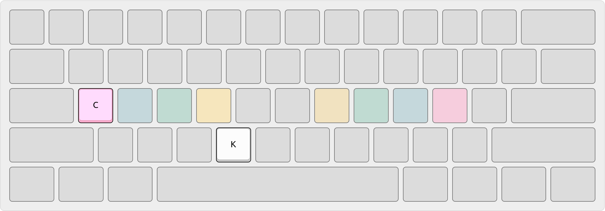
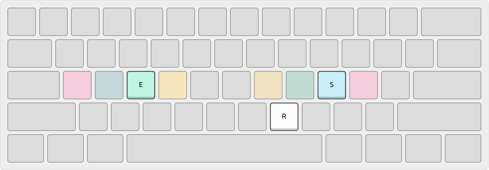

For the past 2 years, I’ve used home row mods designed by the legendary
Miryoku, where the Super, Alt, Control, and Shift modifier keys are embedded
in the home row as dual role “mod-tap” keys through my programmable keyboard’s QMK firmware.
These keys behave normally when tapped, sending their assigned character (such as
the letter “A”) to the computer. But when held, they become modifier keys,
sending their assigned modifier (such as Alt or Shift) to the computer instead.
This literally puts all modifier keys at your fingertips, thereby eliminating
the need to move your fingers away from the home row to reach them.
The main issue with home row mods is the unintended activation of modifiers.
When typing quickly, I sometimes press keys together like a piano chord instead
of tapping and releasing keys individually like distinct notes on a piano scale.
This can activate home row mods and trigger unwanted shortcuts on my computer,
such as launching an app, closing a window, or sending an unfinished e-mail. üò±
Over time, the negative feedback from these misfires has trained me to type more
slowly and thoughtfully, burdening my mind with uncertainty that impedes my
natural typing rhythm and unconscious flow of thoughts onto the computer screen.
Same-hand chords
When typing the word “clock” in the Engram layout, I tend to chord “ck”
by first holding down “c” with my left pinky finger, tapping “k” with my left
index finger, and finally releasing them both simultaneously or in the reverse order.

Miryoku’s experimental “bilateral combinations” feature attempts to solve
this problem by suppressing home row mods for chords that begin and end on the
same side of the keyboard. This way, it only affects home row mods for chords that
cross over to the other side of the keyboard; so they’re bilateral combinations.
However, it has a longstanding bug called “flashing mods” where
the Super key would always be sent to the computer for same-hand chords, even
though their home row mods should be suppressed. This makes me accidentally
trigger the Start Menu when typing words like “clock” and “sock” due to my “ck”
chording tendency.
With sleepless determination, I recently fixed this and contributed a patch.
Dual-hand chords
When typing the word “end” in the Engram layout, I tend to chord the
entire word by first holding down “e” with my left middle finger and then holding
down “n” with right pinky finger, before finally tapping “d” with my right middle
finger. The first two keys essentially form a stable base from which the third
can be reached. Similarly, I chord “est” in the same way when typing the word
“best”.
Thanks to the increased typing speed made possible by my “flashing mods” patch
for same-hand chords, I was able to make the above
observations which revealed a blind spot in Miryoku’s bilateral combinations
concept: it only intercepts same-hand home row mods and completely ignores
the dual-handed ones!
This seemed like the key to solving the problem, so I plunged in with more
sleepless determination and created a new feature called “crossover” bilateral
combinations to intercept fast “rolls” that cross over the
left/right boundary.
Typing streaks
When typing the word “stress” in the Engram layout, I tend to chord the
end of the word (after typing “str”) by first holding down “e” with my left
middle finger and then tapping “s” with right ring finger twice. If done too slowly,
this will trigger the “es” bilateral combination (which sends the Ctrl-S
shortcut to the computer, in my case) instead of tapping “e” and “s” separately.

There is a brilliant solution to this problem in ZMK’s global-quick-tap
feature, which cleverly suppresses modifiers during periods of
active typing. For instance, in the example above, I tap “r” immediately before
the “es” chord: thus, by measuring the amount of time that has passed between the
tap and chord, we can detect whether the chord occurred within a typing streak
and suppress it!
Duly inspired, I’ve implemented this idea in QMK via a configurable typing
streak timeout setting that automatically suppresses home row mods while typing:
However, this tends to obstruct the Shift modifier when typing parentheses or
punctuation marks such as ! and ? at the end of a sentence; and it requires a
dedicated Shift key as a workaround, per @urob’s “timeless” mods for
ZMK. So I went further
and exempted Shift modifiers from typing streaks in a bitwise mask:
Armed with my patches for the aforementioned problems, I have finally tamed home
row mods! But how does it even work, you ask? Well, it’s all quite coincidental:
Three main user actions drive the logic: tapping, holding, and releasing keys.
Everything happens depending on what keys they hold and how long they hold them.
The green hexagons are external events representing a user’s actions.
The blue ovals are a chord’s main stages of life: begin, extend, end.
The pink folders are #define settings, documented individually below.
The yellow components are QMK functions, which I treat as system calls.
The gray boxes are internal storage mutations that track state changes.
Patches
Apply the following patch or check out a ready-to-use branch or working example.
This patch supersedes my previous patches, listed below, by adding support for
chord tapping (multiple mod keys) and “eager mods” for mod-click mouse usage.
Below are the relevant parts of my configuration that put everything in action, producing the best typing experience I’ve felt
since adopting Miryoku. Enjoy! üòé
rules.mk
DEFERRED_EXEC_ENABLE=yes
config.h
/* QMK */#define TAPPING_TERM 200
#define IGNORE_MOD_TAP_INTERRUPT /* for rolling on mod-tap keys *//* Miryoku */#define BILATERAL_COMBINATIONS
#define BILATERAL_COMBINATIONS_LIMIT_CHORD_TO_N_KEYS 4 /* GUI, Alt, Ctrl, Shift */
#define BILATERAL_COMBINATIONS_DELAY_MODS_THAT_MATCH MOD_MASK_GUI
#define BILATERAL_COMBINATIONS_DELAY_MATCHED_MODS_BY 120 /* ms */
#define BILATERAL_COMBINATIONS_ALLOW_CROSSOVER_AFTER 80 /* ms */
#define BILATERAL_COMBINATIONS_ALLOW_SAMESIDED_AFTER 3000 /* ms */
#define BILATERAL_COMBINATIONS_TYPING_STREAK_TIMEOUT 160 /* ms */
#define BILATERAL_COMBINATIONS_TYPING_STREAK_MODMASK (~MOD_MASK_SHIFT)
Usage
To enable bilateral combinations:
Add the following line to your config.h file:
#define BILATERAL_COMBINATIONS
Add the following line to your rules.mk file to enable QMK’s deferred execution facility.
DEFERRED_EXEC_ENABLE=yes
Allowing same-sided combinations
To enable same-sided combinations (which start on one side of the keyboard and end on the same side, such as RSFT_T(KC_J) and RCTL_T(KC_K) in the abbreviation “jk” which stands for “just kidding”), add the following line to your config.h and define a value: hold times greater than that value will permit same-sided combinations.
For example, if you typed RSFT_T(KC_J) and RCTL_T(KC_K) faster than the defined value, the keys KC_J and KC_K would be sent to the computer. In contrast, if you typed slower than the defined value, the keys RSFT(KC_K) would be sent to the computer.
To enable crossover bilateral combinations (which start on one side of the keyboard and cross over to the other side, such as RSFT_T(KC_J) and LGUI_T(KC_A) in the word “jam”), add the following line to your config.h and define a value: hold times greater than that value will permit crossover bilateral combinations.
For example, if you typed RSFT_T(KC_J) and LGUI_T(KC_A) faster than the defined value, the keys KC_J and KC_A would be sent to the computer. In contrast, if you typed slower than the defined value, the keys RSFT(KC_A) would be sent to the computer.
To delay the registration of certain modifiers (such as KC_LGUI and KC_RGUI, which are considered to be “flashing mods” because they suddenly “flash” or pop up the “Start Menu” in Microsoft Windows) during bilateral combinations, you can define a BILATERAL_COMBINATIONS_DELAY_MODS_THAT_MATCH setting specifying which modifiers should be delayed, and a BILATERAL_COMBINATIONS_DELAY_MATCHED_MODS_BY setting specifying how long that delay (measured in milliseconds) should be.
Add the following line to your config.h and define a bitwise mask that matches the modifiers you want to delay. For example, here we are defining the mask to only match the GUI and ALT modifiers.
Add the following line to your config.h and define a timeout value (measured in milliseconds) that specifies how long modifiers matched by BILATERAL_COMBINATIONS_DELAY_MODS_THAT_MATCH should be delayed. For example, here we are defining the timeout to be 100 milliseconds long.
To suppress mod-tap holds within a typing streak, add the following line to your config.h and define a timeout value: a typing streak ends when this much time passes after the last key in the streak is tapped. Until such time has passed, mod-tap holds are converted into regular taps. The default value of this definition is 0, which disables this feature entirely. Overall, this feature is similar in spirit to ZMK’s global-quick-tap feature.
If you wish to target only certain modifiers (instead of all possible modifiers) for the typing streak timeout setting described above, add the following line to your config.h and define a bit mask: only those modifiers that match this mask will be governed by the typing streak timeout. For example, to exempt Shift modifiers from the typing streak timeout while still targeting all other modifiers, you can specify the following mask.
I switched to a new keyboard powered by ZMK
firmware recently and I feared it might take another 6 months to rewrite my QMK-based solution
described thus far. Fortunately, I was able to port an essential subset of my
QMK patches without having to modify ZMK source at all: I didn’t need to write
a single line of C++!
By declaratively defining “custom behaviors” in ZMK, I was able to configure
home row mods disambiguation using a combination of these behavioral components:
flavor="tap-preferred" for strictly time-based home row mods activation
flavor="balanced" for short-circuiting sequence-based layer activation
hold-trigger for cross-hand home row mods enforcement (positional hold-tap)
tapping-term-ms for home row mods detection, as governed by flavor setting
quick-tap-ms for automatic key repetition via “tap then hold” usage pattern
require-prior-idle-ms timeout for typing streak enforcement
The resulting ZMK configuration is posted here, with documentation in comments.
It has separate custom behaviors per hand for crossover bilateral combinations;
as well as per thumbs, index fingers, and the rest for differences in dexterity.
//// HOMEY_HOLDING_TYPE defines the flavor of ZMK hold-tap behavior to use// for the pinky, ring, and middle fingers (which are assigned to Super,// Alt, and Ctrl respectively in the Miryoku system) on home row keys.//#ifndef HOMEY_HOLDING_TYPE
#define HOMEY_HOLDING_TYPE "tap-preferred"
#endif
//// HOMEY_HOLDING_TIME defines how long you need to hold (milliseconds)// home row mod keys in order to send their modifiers to the computer// (i.e. "register" them) for mod-click mouse usage (e.g. Ctrl-Click).//#ifndef HOMEY_HOLDING_TIME
#define HOMEY_HOLDING_TIME 270 // TAPPING_TERM + ALLOW_CROSSOVER_AFTER
#endif
//// HOMEY_STREAK_DECAY defines how long you need to wait (milliseconds)// after typing before you can use home row mods again. It prevents// unintended activation of home row mods when you're actively typing.//#ifndef HOMEY_STREAK_DECAY
#define HOMEY_STREAK_DECAY 230
#endif
//// HOMEY_REPEAT_DECAY defines how much time you have left (milliseconds)// after tapping a key to hold it again in order to make it auto-repeat.//#ifndef HOMEY_REPEAT_DECAY
#define HOMEY_REPEAT_DECAY 300 // "tap then hold" for key auto-repeat
#endif
To illustrate, here is a table of varying behaviors per hand and finger as
arranged in Miryoku’s “G-A-C-S” order on the Engram keyboard layout’s home row.
Left Pinky
Left Ring
Left Middle
Left Index
(Finger)
Right Index
Right Middle
Right Ring
Right Pinky
LGUI
LALT
LCTRL
LSHFT
(Hold)
LSHFT
LCTRL
LALT
LGUI
C
I
E
A
(Tap)
H
T
S
N
Specifically, since index fingers are the most dexterous, the normal rules don’t apply to them well. They roll, tap, and hold rapidly and quite differently based on your typing rhythm and use-case. So the “balanced” flavor of hold-tap in ZMK wasn’t the best choice for them as I sometimes roll with my index fingers, which ends up triggering mods when I don’t intend to. Moreover, the “balanced” flavor’s requirement to release the modified (shifted in my case since I use shift on index fingers) key breaks my rhythm and speed when typing CamelCase variable names: I want it to trigger the mod instantly in this case. Instead, the strictly time-based “tap-preferred” flavor seems to better encapsulate their inconsistent complexity (sometimes I want tap, other times I want hold). And that’s essentially what my QMK implementation does, effectively reading my mind.
The way I’ve implemented bilateral combinations is with 2 levels of hold-taps
bridged by a layer transition. The first level starts at the base layer, with
the first home row mod that you hold taking you its respective layer on the
second level. For example, holding the LeftIndex key takes you to the LeftIndex
layer, which masks all same-sided keys with either (1) additional hold-taps for
the remaining home row mods or (2) mod-cancelling taps for other remaining keys.
Effectively, this approach constructs a “sandwich” ü•™ of timing thresholds:
You hold the first modifier for at leastHOMEY_HOLDING_TIME milliseconds.
The first modifier is now “registered” (sent to the computer).
You are sent to the first modifier’s corresponding layer in the keymap.
You hold the second modifier for at leastCHORD_HOLDING_TIME milliseconds.
The second modifier is now “registered” (sent to the computer).
You can repeat step 2 to add even more modifiers to your multi-mod chord.
You tap a key on the opposite hand.
The tap is now “registered” (sent to the computer) and it’s nested under
the modifiers you’re already holding (which have also already been
“registered”).
NOTE: If you don’t hold the second modifier long enough at step #2, it will
look like a same-sided tap, which will then trigger the bilateral combinations
logic:
The first modifier will be released.
The first modifier’s normal keycode will be tapped.
The second modifier’s normal keycode will be tapped.
{kind=link}
{kind=link}